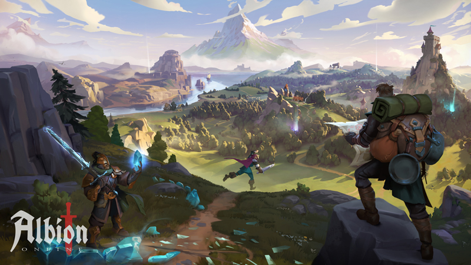
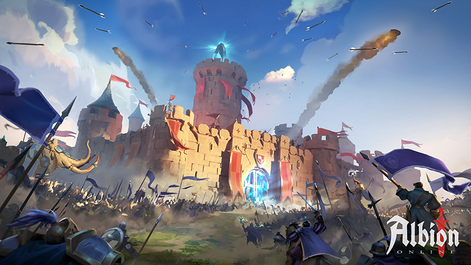
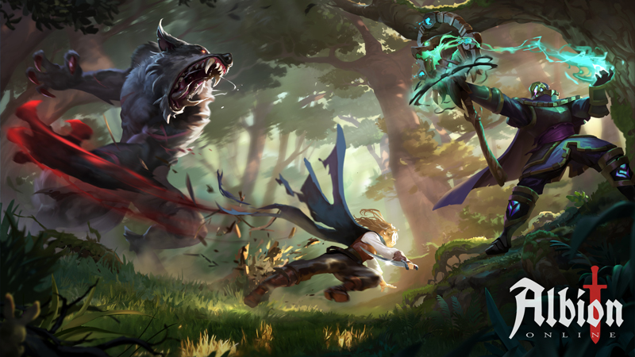

Explore um mundo aberto cheio de aventuras.

Participe de batalhas épicas em PvP.

Personalize sua jornada com um sistema de classes único.
Sobre Albion Online
Albion Online é um MMORPG sandbox onde os jogadores podem moldar o mundo ao seu redor. Explore terras perigosas, conquiste riquezas, e forje alianças para dominar este vasto universo.
Baixar Albion Online